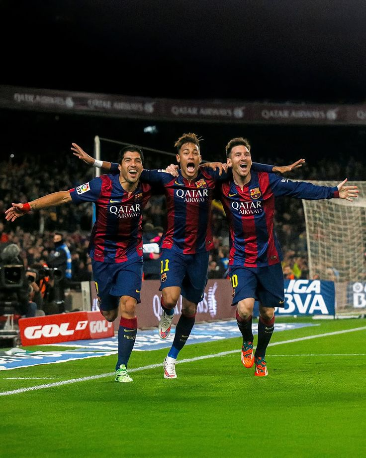

Momentos históricos do Neymar

Suarez, Neymar e Messi, o famoso trio MSN, que fez historia no Barcelona.

Neymar comemorando o primeiro ouro olímpico da seleção brasileira.

Neymar depois de chegar na final com o PSG e perder.

Neymar depois de ter ganhado o titulo Mundial de clubes.

Neymar marcando gol pelo barcelona na final da Liga dos Campeões.
Gols mais lindos do Neymar